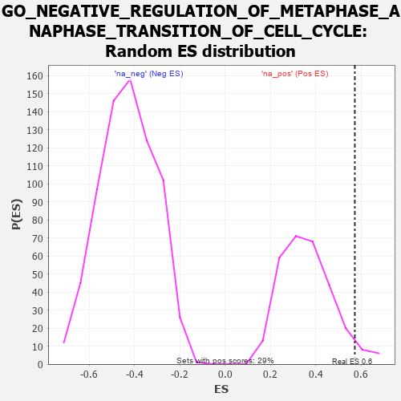

| | | Dataset | 7d |
| Phenotype | NoPhenotypeAvailable |
| Upregulated in class | na_pos |
| GeneSet | GO_NEGATIVE_REGULATION_OF_METAPHASE_ANAPHASE_TRANSITION_OF_CELL_CYCLE |
| Enrichment Score (ES) | 0.5731816 |
| Normalized Enrichment Score (NES) | 1.5836945 |
| Nominal p-value | 0.048442908 |
| FDR q-value | 0.24050482 |
| FWER p-Value | 1.0 |
Table: GSEA Results Summary
 Fig 1: Enrichment plot: GO_NEGATIVE_REGULATION_OF_METAPHASE_ANAPHASE_TRANSITION_OF_CELL_CYCLE
Fig 1: Enrichment plot: GO_NEGATIVE_REGULATION_OF_METAPHASE_ANAPHASE_TRANSITION_OF_CELL_CYCLE
Profile of the Running ES Score & Positions of GeneSet Members on the Rank Ordered List
| PROBE | GENE SYMBOL | GENE_TITLE | RANK IN GENE LIST | RANK METRIC SCORE | RUNNING ES | CORE ENRICHMENT | | 1 | TEX14 | | | 164 | 1.179 | 0.1389 | Yes |
| 2 | BUB3 | | | 172 | 1.143 | 0.2927 | Yes |
| 3 | CDC20 | | | 480 | 0.644 | 0.3413 | Yes |
| 4 | CCNB1 | | | 581 | 0.601 | 0.4101 | Yes |
| 5 | NDC80 | | | 616 | 0.590 | 0.4857 | Yes |
| 6 | RAD21 | | | 779 | 0.538 | 0.5381 | Yes |
| 7 | PSMG2 | | | 1018 | 0.480 | 0.5732 | Yes |
| 8 | ZW10 | | | 1973 | 0.309 | 0.4951 | No |
| 9 | CDT1 | | | 2505 | 0.226 | 0.4589 | No |
| 10 | LCMT1 | | | 3576 | 0.063 | 0.3330 | No |
| 11 | PCID2 | | | 4258 | -0.051 | 0.2544 | No |
| 12 | APC | | | 4558 | -0.107 | 0.2312 | No |
| 13 | ATM | | | 5210 | -0.249 | 0.1832 | No |
| 14 | PLK1 | | | 6082 | -0.500 | 0.1414 | No |
| 15 | TPR | | | 6597 | -0.709 | 0.1727 | No |
Table: GSEA details [plain text format]

Fig 2: GO_NEGATIVE_REGULATION_OF_METAPHASE_ANAPHASE_TRANSITION_OF_CELL_CYCLE: Random ES distribution
Gene set null distribution of ES for GO_NEGATIVE_REGULATION_OF_METAPHASE_ANAPHASE_TRANSITION_OF_CELL_CYCLE